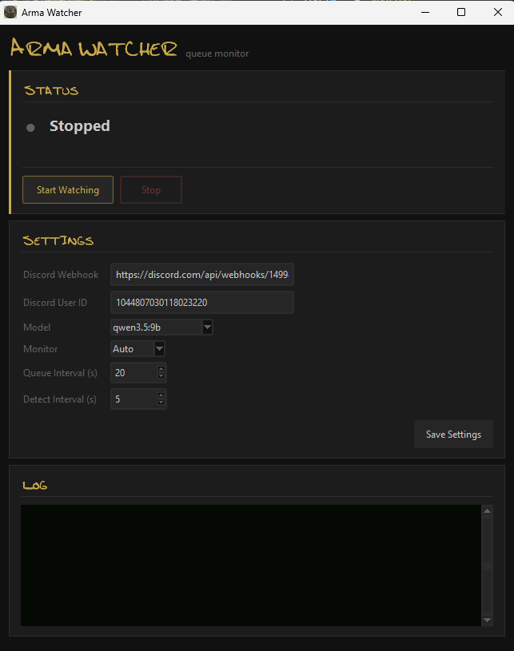

Arma Watcher reads your Arma Reforger screen, tracks your spot in the server queue, and sends Discord notifications with your position and ETA.
No cloud, no account, no API key — screenshots are read by a model running on your own machine.

A local vision model (via Ollama) watches the screen and detects your position the moment you enter a server queue.
Milestone notifications — “30 to go”, “Almost there”, “You’re in!” — so your channel isn’t spammed every poll.
Tracks how fast the line is moving and estimates how long until you’re in the game.
Screenshots never leave your PC. Everything runs locally — no API keys, no accounts, no cloud.
ArmaWatcherSetup.exe. It installs everything it needs — uv, Python, Ollama and the app — into its own folder. (Windows SmartScreen may warn on a new publisher; choose More info → Run anyway.)First start downloads the vision model (a few GB) — progress shows right in the app’s log. After that it’s instant.
Windows 10/11 · A GPU with at least 1 GB VRAM (6.6 GB recommended for the default model) · Arma Reforger on any connected monitor · (optional) a Discord webhook URL for notifications.
Smaller models run on less VRAM but are less accurate — they read the queue more slowly and are more prone to misreading your position. For the most reliable results, use the recommended model on a capable GPU.
No GPU, or want to keep your machine free? You can offload the queue-watching compute to us for $3/month — same notifications, none of the local load.